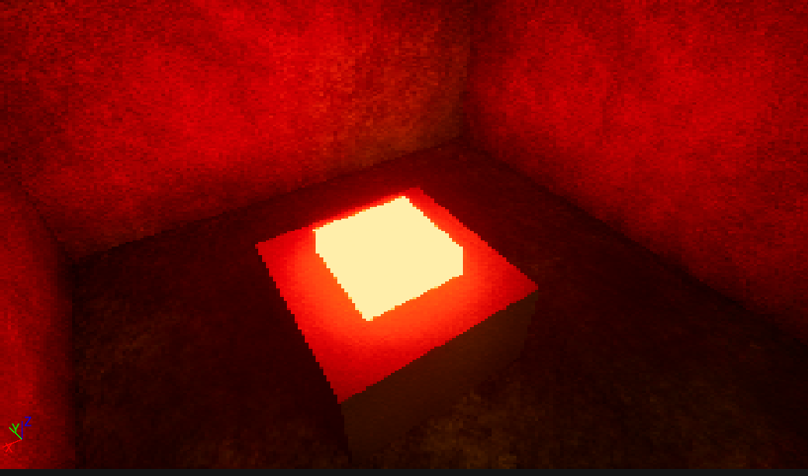
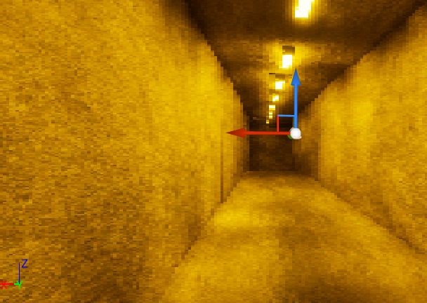
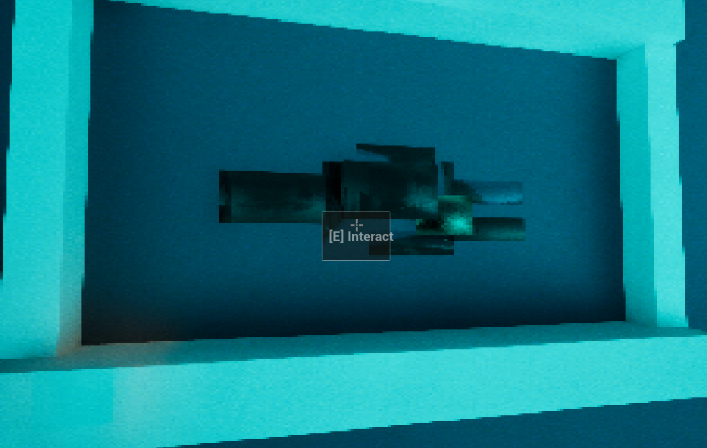
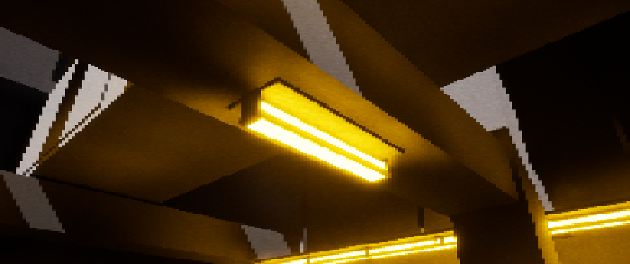
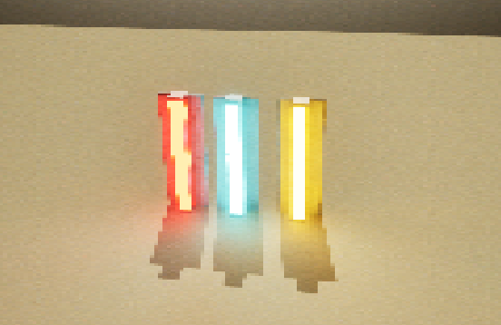
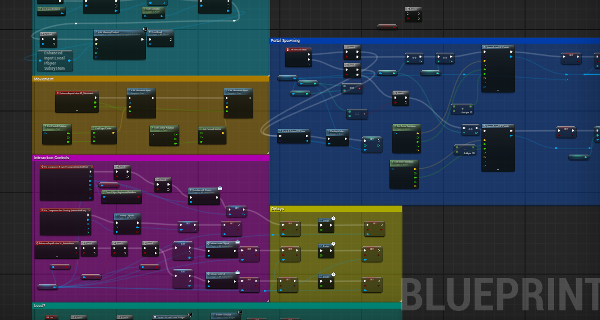

Dimensional Rift
As the PROGRAMMER for this assignment, me and my team were tasked with making a prototype 3D platforming game, focusing on a unique movement mechanic, for which we chose to focus on teleporting.
Below is my Development Process where I believe I made a good platforming, I could definitely have done better knowing my current expertice, but I am still proud of this work!
Completed Sprints & Devlog
Reflection
Probably one of the things that went the best in our development was our design and art, we had a very set idea for exactly what we wanted to do for the game from the very beginning, getting a lot of our ideas brainstormed and written down for us to look back at when we needed to remember. Another thing that came out really well was all of the textures and art style for the game, especially the post processing, which was personally one of my favorite parts about the game and one of the things I was the most proud of!
Unfortunately to actually having finished making absolutely everything we wanted to include in the game, we didn't have as much luck, one of the bigger aspects of the game that we wanted to include was instead of just having the game be purely a puzzle / platformer, we also wanted to have the player have to run away from enemies that were chasing them throughout the facility, adding a big of urgency to the player and forcing them to find the quickest possible way to get through puzzles, this would bring more attention to the player having to manage their health and have to dodge enemies while also trying to platform and teleport around the room!
In regards to the enemies, we focused more on all of our other systems and didn't prioritize them at all, leading to them having to essentially be scrapped later in development because we simply didn't have enough time when all of the other systems were done. I don't think the loss of enemies impacted our game too negatively as all of our other systems pretty much carried the game and still made it a perfectly good final product and enjoyable experience to play even without that feature. As sad as it is, sometimes you have to know when to cut a feature that you don't have time to make.
If I could redo the project, I would definitely choose to keep all of our visuals, I know they weren't exactly required from the project, as this is a mostly systems focused class, but I think they look really good and make our project stand out great from the rest of the ones in our class, it makes out levels look really professional that they have custom meshes and textures on everything to really make it all look professional.
However, despite what I said in my previous paragraph, I would definitely focus on them a bit less and put more priority into important systems, that way maybe if I wasn't focusing on things like post processing and sounds, I could've got to the enemies quicker and had them actually working by the time our final prototype was due, sometimes things aren't prioritized they way they should be and it is important to learn from that and not make that mistake next time!
This project has taught me a lot about working with groups of people and prioritizing tasks, it's hard to determine how hard something will be to code or how long it will take you to make, something that you could think could be really easy and simple to make can end up taking you the longest time and something that you set aside a lot of time for can end up taking less than a day to make, it is hard to tell, but overall I've learned that, as a rule of thumb, it is important to pick out at the very start of the project which systems are THE most vital in a project and absolutely make sure you get them done first!
If I could redo this project I would probably get started on the enemies much sooner, allowing us more time to work on them and create enemies of different types, since I think that is more important than say, the second level of the game, which took us quite a bit of time to work on and make, especially with things like the lava in the level and it's accompanying systems, which annoyingly caused us a lot of issues.
One final thing I will say is that even thought essential systems is what I tried to prioritize the most, I still got distracted with other aspects of the game every now and then that definitely were not essential to the final product, such as the interactable cat and it's accompanying secret at the end of the game, the game would've been the same without it, but instead I dedicated time at the end of the game to making it, something almost no one found and was made purely for my enjoyment, when I could've been working on the enemies.
Overall, I had plenty of things on this project that I did well and things I could've done differently. It was a great learning experience but I'm overall proud with how it came out, I think me and my group did a great job!
Images:


Sprint #4
One of the big things that I worked on this sprint was the tutorial ui setup and code as well as the end of the level, I had to make sure the tutorial came up and the right time and left after a little while, as well as making sure that when the player got to the end of the level, they screen would fade to black, and then unfade in the next level to give an almost seamless transition, as well as making sure it would end at the correct location and spit the player out at the right location
Another big thing I had to do was get the buttons to work that previous didn't work, these buttons would be responsible for opening up the bars throughout the level to allow the player to progress through the maze area.
One major issue I had with this buttons was how to do the setup, originally I wanted to use a Get All Actors Of Class node to do this, but then after a bit of struggling I figured out it would be much easier to get an object reference to an actor an then just set the bar object references for each set of bars in the editor rather than trying to use that previous node and variables
One of the final main things I did this was setup the dyanmic UI for dealing with Health, taking the amazing visuals created by our designer and giving them purpose, allowing them to work the way they were supposed to. I attached the health bar to the previous strictly internal health variable, making it match the variable correctly.
Something I will probably take care of this next sprint is adding a text popup that appears whenever you take damage, listing how much damage you just took to give a visual indicator to the loss of health, as well as animating it to have a fade in and out so it won't be too blocky
Images:
 Sprint #3
I encountered many problems during this sprint that led to it being overall a harder experience than the last one, from Ui scaling issues to not being able to figure out how to make projectiles work, it was error and bugs galore!
When I first started working this sprint, I prioritized figuring out how to attach out existing portal system to projectile to get it working like an actual portal gun! And that took a long time, even at the end of the sprint I couldn't figure it out, I was much father along in the process but it wasn't completely done. During this sprint I also have issues managing UI scaling, because even with Unreal Engine's UI Anchor system there were still problems when it came to the scale that would leave some resolutions with the text of the interact box poking out of the bounds of the box, this was an easy thing to fix though that was remedied by simply expanding the box!
Because of my issue with the teleportation projectiles I didn't get nearly as much done this sprint as I would have liked I only really got the UI done, worked on the teleportation, and a few other small things like bug fixes done, but in terms of major things and getting cards done, this sprint was definitely not my strong suit Next sprit I plan on working a lot more of the teleportation projectiles and hopefully getting it done early into the sprint so I can prioritize things like level intractability and enemy design / coding to get the game fully fleshed out
Images:
 Sprint #2
We got a lot of good stuff done this sprite, we got portals working and we got a lot of lighting fixture done as well, level design also made some great looking rooms during the sprint and we got some nice textures made for the light to really have them glow!
Sprint Kickoff went pretty well all things considered, everyone got stuff assigned to them and got to work, an everyone started getting cards done pretty well, the only dip in productivity we had was around the center of break, where most of the team took a little bit of a break from working on the project to relax with families and such, but towards the end of the sprint everyone got mostly back on the horse an started getting things done!
For a while I was having an issue where only one portal was working correctly and the second portal would teleport you to yourself, this was an issue caused by me when creating a different system that accidently overlapped with the portal system and broke it a little bit, it took a while to figure out what the issue was, but eventually, but getting a second opinion from my producer, I managed to figure out the issue and fix it
The process of working in sprints like this has been quite different than what I'm used to when working on projects. Usually I just work on thing whenever I have time and pump out as much as I can in one sitting, having to actually work on the project day after day and MAKE time to work on it is quite a different situation for me, but at the same time, it makes it feel like I'm actually working on a real game project
Video:
Images:
 Sprint #1
So far, the process in this sprint has felt different than all of my other coding projects to this day, mostly because of the new workflow we've been using. It feels like I'm not just coding the game whenever I have time or whenever I feel like it, but that I actually have a job to get done, deadlines to meet, and work to do. This overall made the project so far feel much more real compared to other previous projects in previous classes like group projects in 180 and 280.
The beginning of the sprint was a bit of an adjustment, it was a bit difficult going from just working on things when I had time, to realizing I actually needed to work on it every day, which wasn't a change that happened overnight. Other than this, I didn't really have any other setbacks
I got quite a bit done during this sprint, I got the menu, working buttons, working movement, and a built-up interaction system that can be easily implemented into almost any object
Sprint kickoff went pretty well, we were all assigned cards aand got to work on them, as mentioned above I had a bit of a slow start, but once I realized my errors I quickly got to work, it was then we realized that we were assigned nearly enough cards, or even had enough in the backlog, this is something we'll make sure to fix next time, in which we'll put in the backlog way more than we think we'll ever need, so as to not have this issue.
Moving into this next sprint I am attempting to tackle the inventory system, this will probably take a while as I'll have to teach myself how to do it, but I'm fine with that as it provides a welcome challenge compared to what I got done last sprint which I already kind of knew how to do!